Consent and chaperone first, then each part in the order you do it: penis, scrotum and testes, groin and hernia check (standing), then the anus, rectum and prostate (lying on the side). Built from the Year 2 course objectives, because no faculty slides were found for this session; anything beyond the objectives is tagged extra. Pictures are drawn schematics only.
Look: everything shown. Pick a region below to jump to it.
Consent → Penis → Scrotum and testes → Groin and hernia → Anus, rectum and prostate → Explain
Look, then feel, comparing left with right. Say what you are about to do before you do it, and stop at once if the patient asks.
General approach
Every GU and rectal exam
The general approach
Say it first (TOSCE, Teaching Objective Structured Clinical Exam): "I'll explain each step before I do it. Let me know if anything is uncomfortable, and you can ask me to stop at any time."
Consent: explain why the exam is needed and what it involves (looking at and feeling the genitals, checking for a hernia, and a gloved finger in the rectum), and get the patient's agreement
Chaperone: offer one (many settings require one) and introduce them
Prepare: warm hands, gloves on for every part, privacy to undress, and a drape so only the area being examined is uncovered
Order: patient standing for the penis, scrotum and hernia check (hernias and varicoceles show best standing); then lying on their side for the rectal exam
Explain, then touch: name each step, use neutral words, watch the patient's face and check in
Stop means stop: if the patient asks you to stop, stop straight away
Tap to reveal
Normal anatomy
Understand normal male genital and rectal anatomy
Penis: the shaft (spongy erectile tissue, with the urethra running along the underside), the glans (the tip), the urethral opening (meatus) at the tip of the glans, and the foreskin (prepuce), which covers the glans if the patient is uncircumcised
Scrotum: two compartments, each holding
a testis: smooth, firm, rubbery, egg-shaped, about 15-25 mL in an adult; the left usually hangs lower
the epididymis: a soft comma-shaped ridge behind and on top of the testis
the spermatic cord: runs up from the testis to the inguinal canal; contains the vas deferens (a firm cord, like a piece of string) and blood vessels
Inguinal region: the inguinal canal runs just above and parallel to the inguinal ligament (from the hip bone (ASIS, anterior superior iliac spine) to the pubic bone); its outer opening (external inguinal ring) sits just above and beside the pubic bone, where the spermatic cord leaves the abdomen
Rectum and prostate: the anal canal (about 4 cm) opens into the rectum; the prostate lies in front of the rectum (toward the bladder), felt through the front wall
normal prostate: about walnut-sized, two lobes with a groove down the middle (median sulcus), smooth and rubbery, not tender
Tap to reveal
Penis
T2C · Genitourinary · 2 steps
Look and feel
Before the steps
Say first: "I'll explain each step before I do it. Let me know if anything is uncomfortable, and you can ask me to stop at any time."
Inspect the penis and describe its appearance, recognizing the spectrum of normal anatomy and disease; palpate to assess its structures
Look: pubic hair, skin, shaft, glans, foreskin, meatus. Feel: shaft, then glans. Patient standing, gloves on.
Tap to reveal
Penis
Penis: inspection
Skin, hair, foreskin, meatus
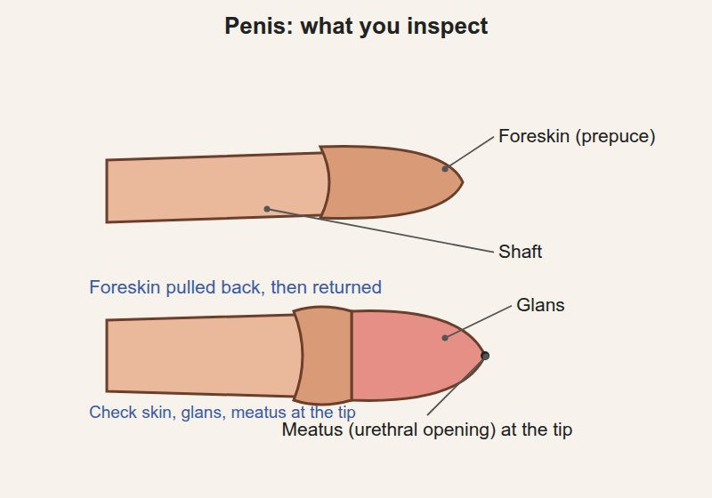
Steps
Look at the pubic hair and skin
Look at the shaft and glans
If uncircumcised, ask the patient to pull back the foreskin (or do it gently), then return it afterwards
Look at the position of the urethral opening
Positive
Ulcers, warts, rashes, lice · discharge from the meatus · meatus on the underside or top of the shaft rather than the tip · foreskin too tight to pull back, or ⚠ stuck behind the glans (normal: clean skin, meatus at the tip, foreskin retracts and returns easily)
Tap to reveal
Penis: palpation
Structure of the shaft
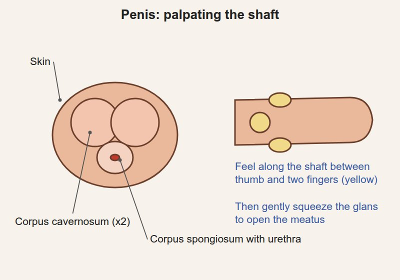
Steps
Feel along the shaft between thumb and two fingers
Gently squeeze the glans to open the meatus and look for discharge
Positive
Tender areas, hard lumps or plaques in the shaft · discharge (normal: soft, smooth, non-tender)
Tap to reveal
Pearls
Remember
⚠ A foreskin left pulled back can swell and get stuck: always return it at the end.
Tap to reveal
Scrotum and testes
T2C · Genitourinary · 6 steps
Look and feel
Before the steps
Say first: "I'm going to look at and gently feel each testicle. Tell me straight away if anything hurts."
Inspect the scrotum and palpate the scrotal contents: one side at a time, comparing left with right
Tap to reveal
Swelling, lumps or pain in the scrotum
Scrotum: inspection
Shape, size, skin
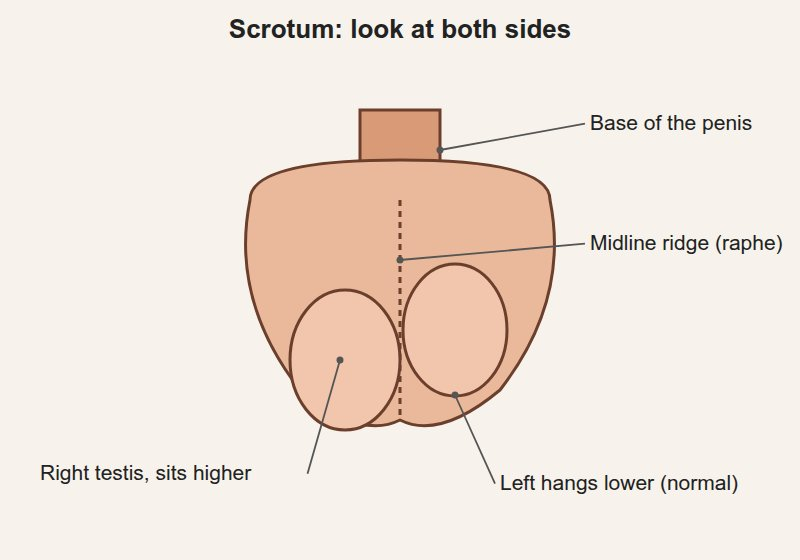
Steps
Lift the scrotum to see the back of it
Compare the two sides
Positive
Swelling · redness · rashes, cysts, ulcers · ⚠ a testis sitting high or lying horizontally (normal: two sides roughly equal, left lower)
Tap to reveal
Testis palpation
Testes
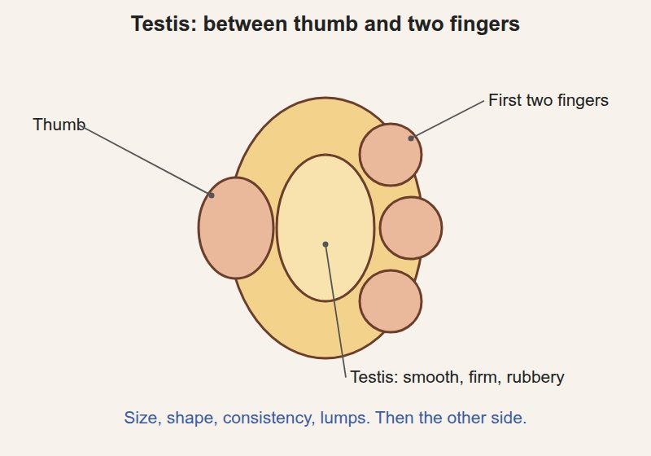
Steps
Hold the testis gently between thumb and first two fingers
Feel its size, shape, consistency and any lumps
Repeat on the other side
Positive
⚠ A firm lump within the testis (testicular cancer until proven otherwise) · tenderness · one testis missing from the scrotum (normal: smooth, rubbery, equal, mildly sensitive)
Tap to reveal
Epididymis palpation
Epididymis
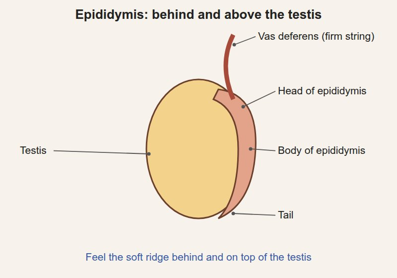
Steps
Feel behind and on top of each testis
Positive
Tender swelling (epididymitis) · a separate cyst (normal: soft, non-tender ridge)
Tap to reveal
Spermatic cord and vas deferens
Cord and vas deferens
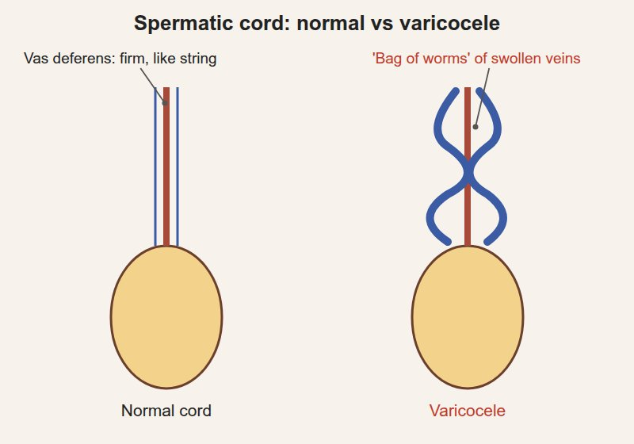
Steps
Follow the cord up from the epididymis to the inguinal ring between thumb and finger
Roll the vas deferens between your fingers
Positive
"Bag of worms" above the testis (varicocele, enlarged veins; usually left, best felt standing) · thickening or tenderness (normal: smooth cord with a firm string-like vas)
Tap to reveal
Transillumination
Whether a swelling is fluid or solidextra
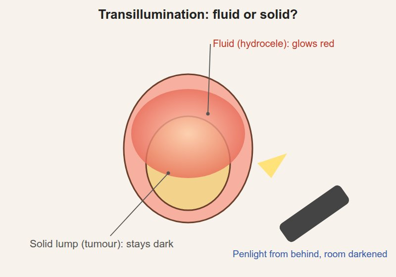
Steps
Darken the room
Shine a penlight from behind the swelling
Positive
Glows red = fluid (hydrocele) · does not glow = solid (consider a tumour)
Tap to reveal
Cremasteric reflex
Whether the testis rises (testicular torsion screen) extra
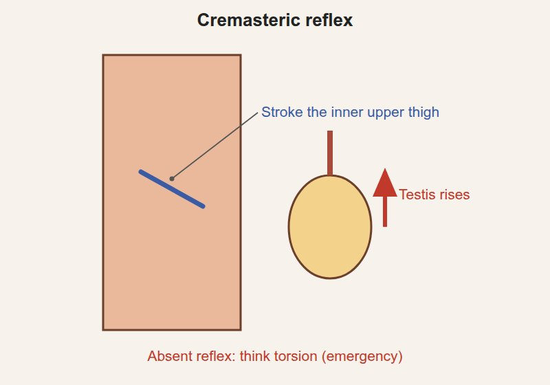
Steps
Patient standing or lying, thigh slightly turned out
Stroke the skin of the inner upper thigh with a finger or blunt tool
Watch the testis on that side
Positive
Testis does not rise (reflex absent) ⚠ often absent in torsion, the twisting of the testis, a surgical emergency (normal: the testis rises a little)
Tap to reveal
Pearls
Remember
Look: lift the scrotum, compare sides. Feel: testis, epididymis, then the cord, one side at a time.
⚠ A painless firm lump in the testis is cancer until proven otherwise; a sudden painful high testis is torsion until proven otherwise.
Tap to reveal
Inguinal region and hernia check
T2C · Genitourinary · 3 steps
Look and feel
Before the steps
Say first: "I'm going to check for a hernia. I'll ask you to cough or bear down while I feel the groin."
Inspect to recognize inguinal hernias when present; palpate using the Valsalva maneuver (bearing down) to bring out small hernias
Patient standing; you sit or kneel in front (from the upper-year notes)
Tap to reveal
A bulge in the groin (hernia)
Groin inspection with Valsalva
Visible hernia
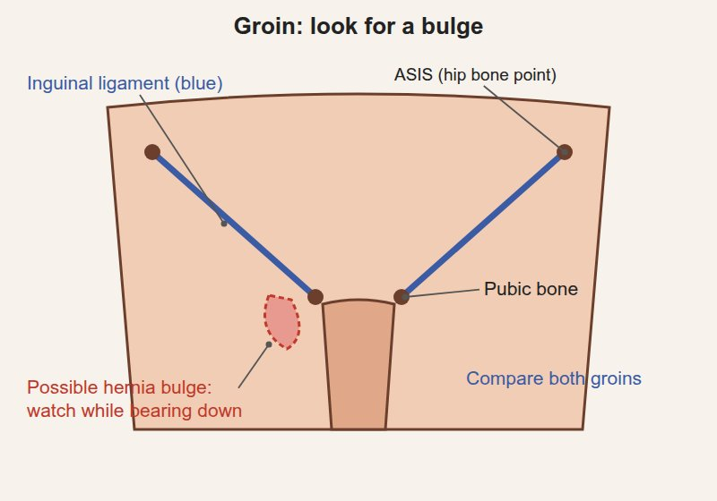
Steps
Look at both groins at rest
Ask the patient to bear down as if having a bowel movement (Valsalva) or cough
Watch both groins and the scrotum
Positive
A bulge in the groin or scrotum that appears or grows with straining (normal: no bulge)
Tap to reveal
Inguinal canal palpation
Small hernia
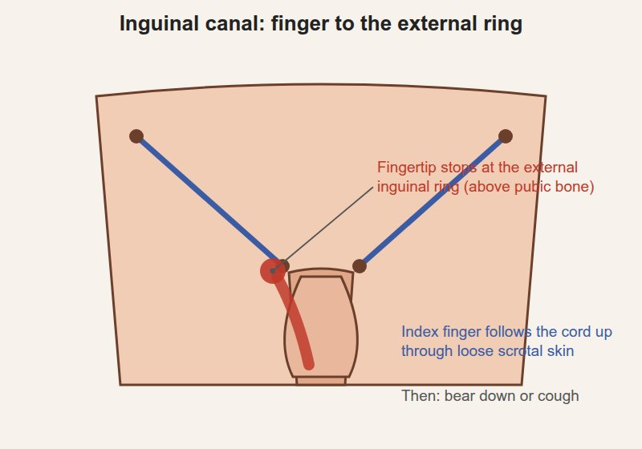
Steps
Use the index finger on the same side (right for right)
Start low on the scrotum and push the loose scrotal skin up with your finger, folding it inward along the spermatic cord to the external inguinal ring (just above and beside the pubic bone)
Ask the patient to bear down or cough
Repeat on the other side
Positive
A bulge or impulse pushing against your fingertip or the side of your finger when the patient strains (normal: nothing felt, or the ring just tightens)
Tap to reveal
Inguinal lymph nodes
Enlarged nodes extra
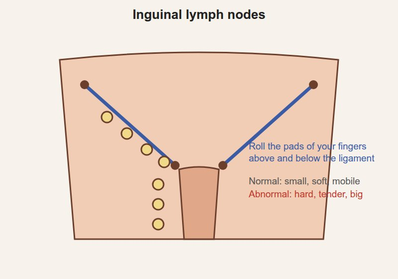
Steps
With the pads of your fingers, roll gently over the skin above and below the inguinal ligament
Positive
Enlarged, hard or tender nodes (infection or cancer in the legs, genitals or anus) (normal: small, soft, mobile nodes can be felt)
Tap to reveal
Pearls
Remember
⚠ A hernia that is tender, firm and cannot be pushed back may be trapped (incarcerated): it needs urgent attention.
Tap to reveal
Anus, rectum and prostate
T2C · Genitourinary · 4 steps
Look and feel
Before the steps
Say first: "I'm going to place a gloved, lubricated finger in your rectum. It may feel like you need a bowel movement; tell me if you want me to stop."
Inspect to recognize the spectrum of superficial anal disease; palpate and describe the prostate
Position: patient lies on their side (usually the left), knees drawn up to the chest, buttocks at the edge of the bed; a drape covers everything but the anus
Tell the patient: "You'll feel my finger now. It may feel like you need to have a bowel movement; that's normal."
Tap to reveal
Anus and rectum
Anus: inspection
Superficial anal disease
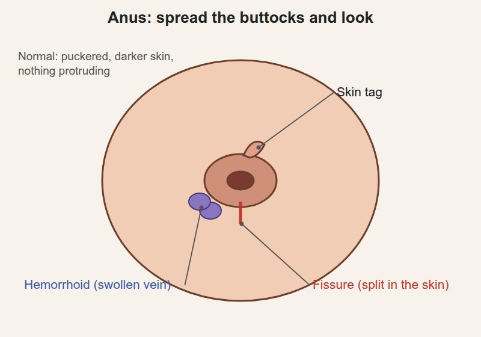
Steps
Gently spread the buttocks
Look at the skin around the anus
Ask the patient to bear down to bring out anything hidden
Positive
Hemorrhoids (swollen veins) · skin tags · fissure (a split in the skin) · fistula opening · warts · rash · bleeding (normal: puckered, darker skin, nothing protruding)
Tap to reveal
Digital rectal exam (DRE)
Anal tone, rectal wall
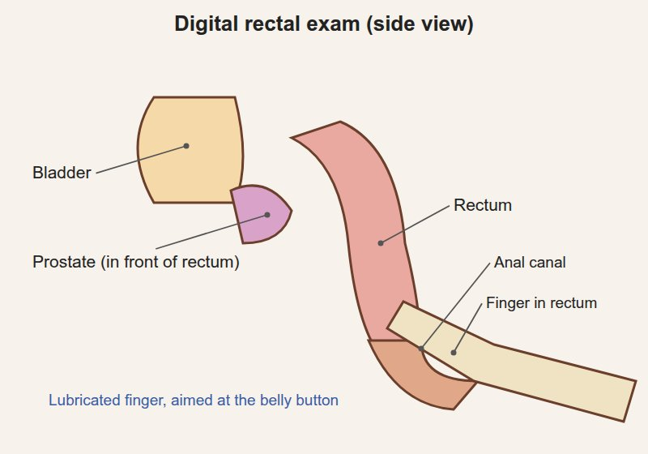
Steps
Lubricate the gloved index finger
Place the pad of the finger on the anus and wait for the muscle to relax
Slowly insert it, pointing toward the belly button
Ask the patient to squeeze around your finger (anal tone)
Sweep around the rectal walls
Positive
Weak squeeze (poor anal tone) · a mass in the rectal wall · tenderness (normal: firm squeeze, smooth walls)
Tap to reveal
Withdrawing and the glove
Blood, stool
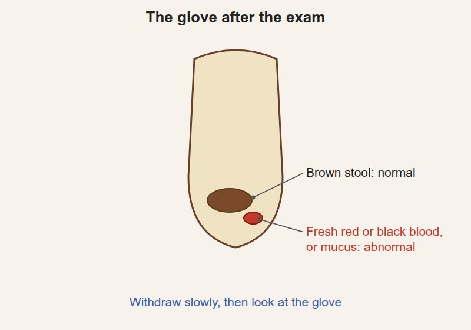
Steps
Withdraw slowly
Look at the glove
Positive
Blood (fresh red or black) or mucus (normal: brown stool, no blood)
Tap to reveal
Prostate
Prostate palpation
Size, consistency, surface, tenderness
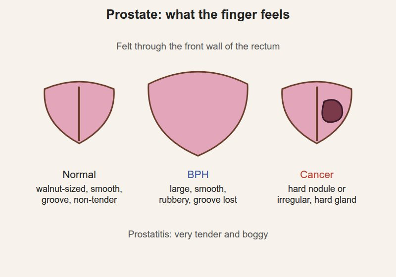
Steps
Turn the finger to the front wall (toward the bladder)
Feel both lobes and the groove between them
Note size, consistency, surface and tenderness
Positive
Enlarged, smooth, rubbery, groove lost (benign prostatic hyperplasia, BPH) · ⚠ hard nodule or irregular, hard gland (prostate cancer) · very tender, boggy (prostatitis) (normal: walnut-sized, smooth, rubbery, two lobes with a groove, non-tender)
Tap to reveal
Pearls
Remember
Look: spread the buttocks, bear down. Feel: tone, walls, prostate, then the glove.
⚠ Never skip the warning and consent before the finger goes in. Finish kindly: offer tissues to wipe, give privacy to dress, then explain what you found and what happens next.
Tap to reveal
Videos
No videos for this exam: none were found in the course library, and none could be verified elsewhere.
Image credits
Images reused under their open licences (Creative Commons or public domain). Some were cropped to hide faces.
Penis: inspection: Noor Simsam (original schematic drawing for this page), Original drawing, no photograph, source
Penis: palpation: Noor Simsam (original schematic drawing for this page), Original drawing, no photograph, source
Scrotum: inspection: Noor Simsam (original schematic drawing for this page), Original drawing, no photograph, source
Testis palpation: Noor Simsam (original schematic drawing for this page), Original drawing, no photograph, source
Epididymis palpation: Noor Simsam (original schematic drawing for this page), Original drawing, no photograph, source
Spermatic cord and vas deferens: Noor Simsam (original schematic drawing for this page), Original drawing, no photograph, source
Transillumination: Noor Simsam (original schematic drawing for this page), Original drawing, no photograph, source
Cremasteric reflex: Noor Simsam (original schematic drawing for this page), Original drawing, no photograph, source
Groin inspection with Valsalva: Noor Simsam (original schematic drawing for this page), Original drawing, no photograph, source
Inguinal canal palpation: Noor Simsam (original schematic drawing for this page), Original drawing, no photograph, source
Inguinal lymph nodes: Noor Simsam (original schematic drawing for this page), Original drawing, no photograph, source
Anus: inspection: Noor Simsam (original schematic drawing for this page), Original drawing, no photograph, source
Digital rectal exam (DRE): Noor Simsam (original schematic drawing for this page), Original drawing, no photograph, source
Prostate palpation: Noor Simsam (original schematic drawing for this page), Original drawing, no photograph, source
Withdrawing and the glove: Noor Simsam (original schematic drawing for this page), Original drawing, no photograph, source